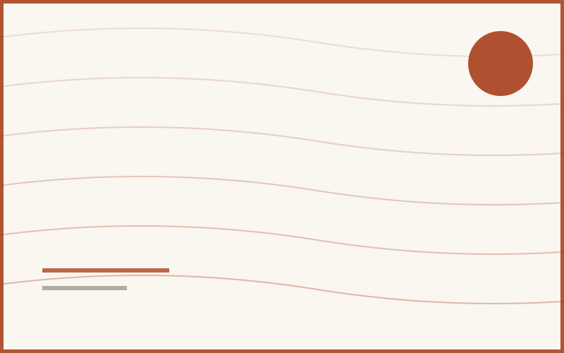
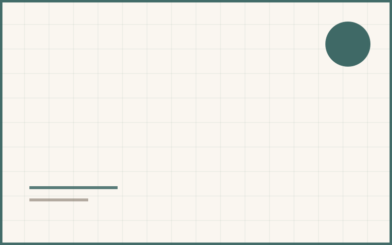
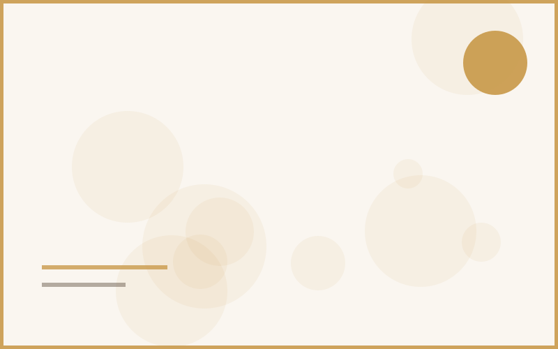
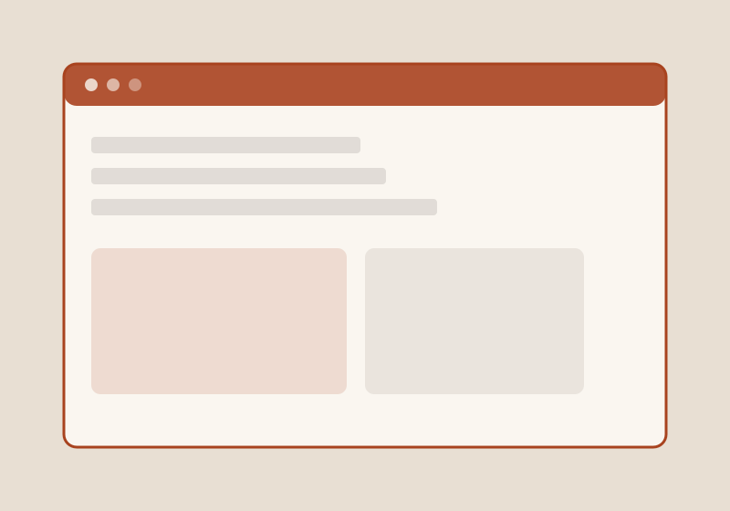
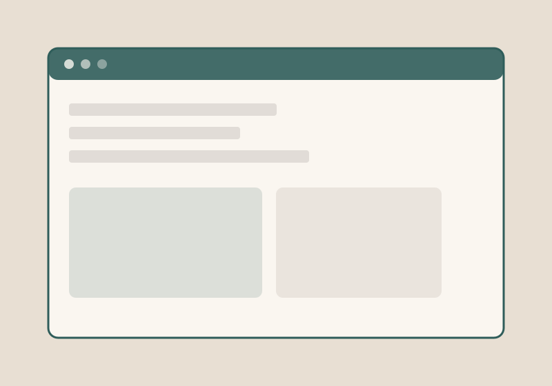

Understanding the Banker's Algorithm, one allocation at a time
A walkthrough of deadlock avoidance using safe-state checking — with the matrix tables that finally made it click before my CSE 3203 exam.
Read article →CSE Undergraduate · Varendra University
I'm Mahu — I write about operating systems, web development, and whatever breaks (then fixes) on my desk. This is where the write-ups and the side projects live side by side.
From the notebook
Write-ups on systems concepts and front-end builds — explained the way I wish someone had explained them to me first.

A walkthrough of deadlock avoidance using safe-state checking — with the matrix tables that finally made it click before my CSE 3203 exam.
Read article →
Tokens, components, and the handful of decisions that kept this very site's stylesheets from turning into spaghetti.
Read article →
Race conditions, critical sections, and why semaphores clicked for me only after I drew them as traffic lights.
Read article →From the workbench
A few things I've built end to end — click a card for details, screenshots, and links to the source.


I read every message — about coursework, collaboration, or just to say the Banker's Algorithm post finally made sense.